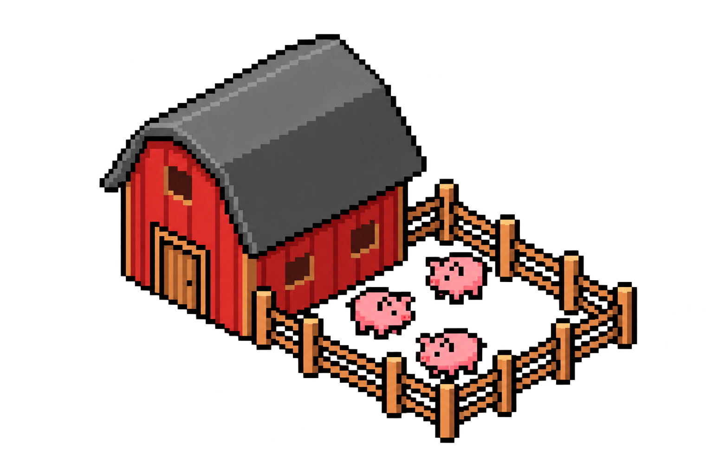
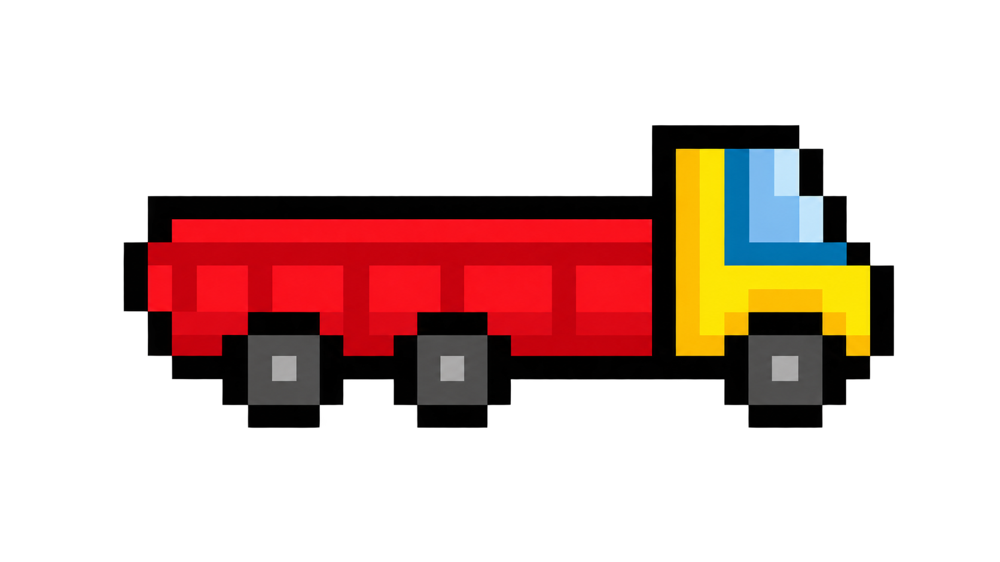
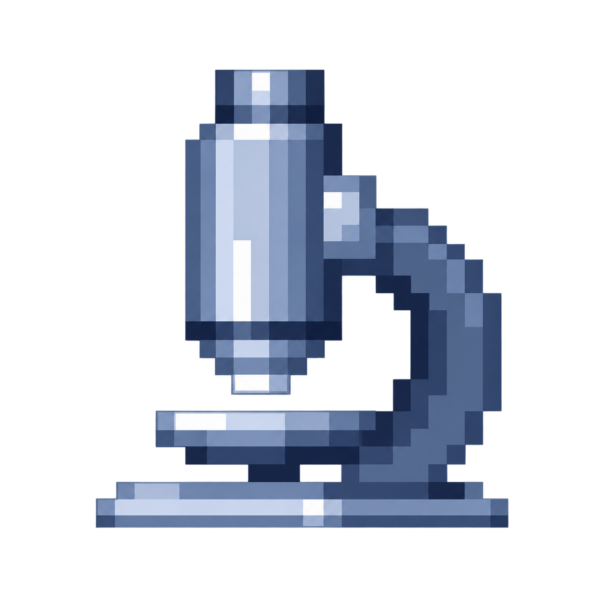
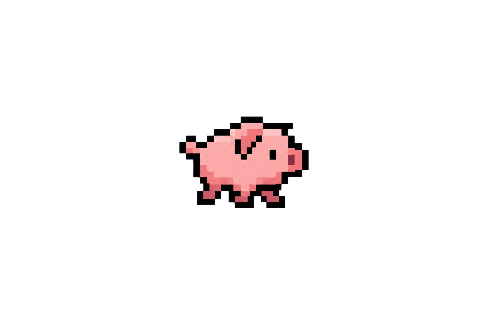

01
Audit
Comprendre les pratiques, les données et les besoins.



Diagnostic
Mouvements & lotsNosotrack offre une solution analytique complète de réponse aux épizooties, permettant des interventions plus rapides, plus ciblées et moins coûteuses, en 3 étapes :
Intégration : les données sanitaires, les mouvements d’animaux et de lots, le séquençage et les contacts entre élevages sont réunis dans un moteur unique.
Reconstruction : l’inférence bayésienne reconstitue les chaînes de transmission, identifie les sources probables et les animaux, lots ou élevages les plus à risque.
Intervention : un copilote IA évalue en quelques secondes différents scénarios de contrôle et les classe selon leur capacité à contenir l’épizootie, leur coût et leur impact opérationnel.
Comprendre les pratiques, les données et les besoins.
Tester Nosotrack dans des scénarios représentatifs.
Appliquer la plateforme à des épisodes passés.
Intégrer Nosotrack au dispositif de biosécurité de Cooperl.